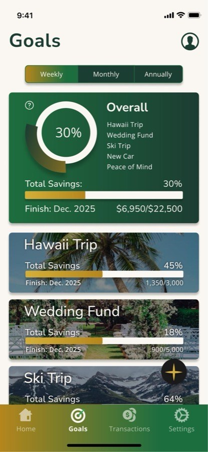
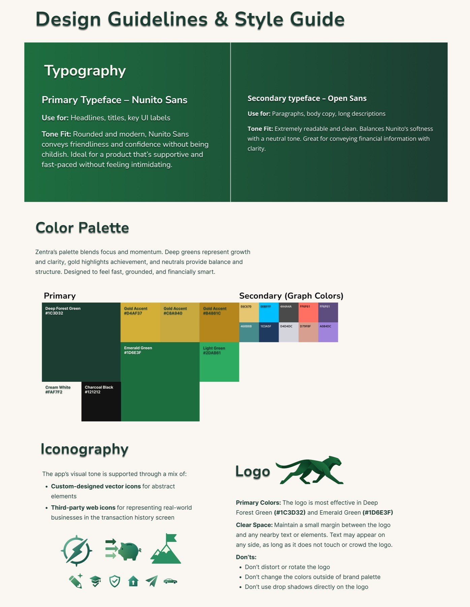
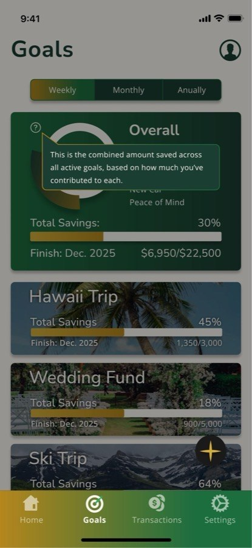
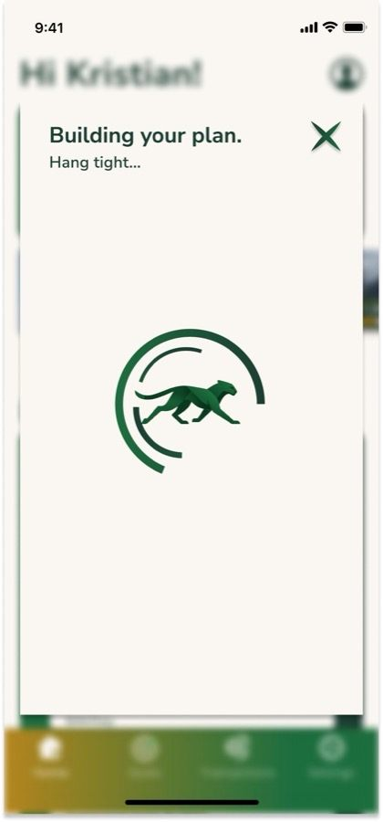
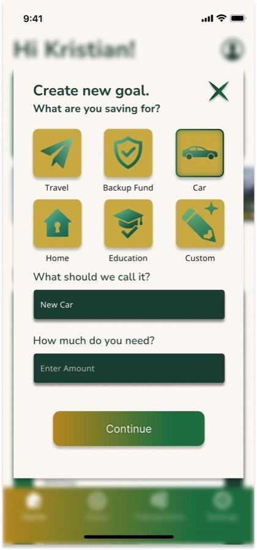

Progress as the product
Zentra organizes saving around goals, not one abstract balance. A vacation, an emergency fund, a wedding, a car.
Each becomes something visible and measurable instead of disappearing into one total.
Progress rings, percentages, and dollar amounts turn "I should save more" into something concrete: where I am now and how far I have left.

Identity built around momentum
Zentra needed to feel like progress, not paperwork.
The cheetah mark runs. Deep green and gold carry growth and achievement, and the mark appears in motion wherever the app is working.
Nunito Sans for headlines and Open Sans for body keep the type rounded and readable, so the product can feel credible without intimidating someone who has never budgeted a day in their life.

Testing changed the interface
Three usability sessions surfaced real friction. Each one led to a specific change.
- Wanted more explanation for how numbers were calculated
- added tooltips explaining the math
- Found the "Building Plan" screen slightly confusing
- added a visual loading indicator
- Took a moment to notice the "+" icon as the entry point for creating a goal
- added iconography and a supporting label



Accessibility and contrast were part of the design review, not treated as separate from it.
production note · select imagery created with generative AI